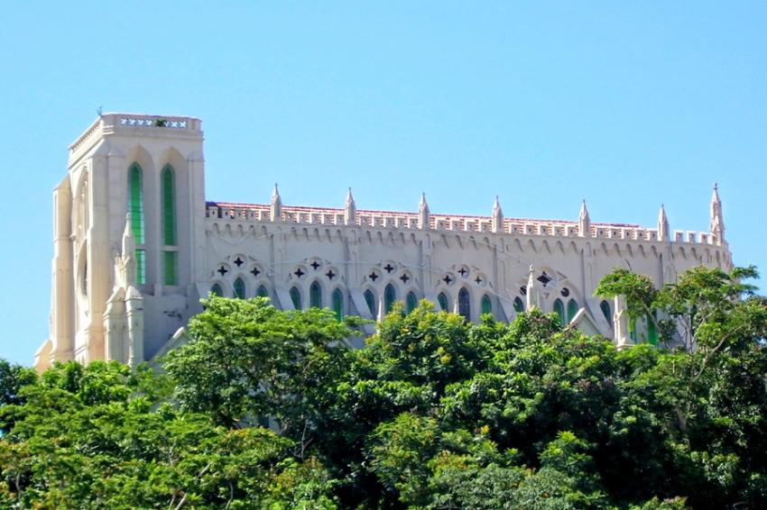

Olá Seja bem vindo ao meu site, aqui você verá meu Curriculum vitæ e alguns pontos turísticos de MATO GROSSO
Bom para começarmos abaixo você verá meu Curriculum vitæ!
clique aqui
Bom pós ter visto meu Curriculum vitæ você verá alguns pontos turísticos de MATO GROSSO
- Primeiramente abaixo você verá uma linda atração chamada Aquário encantado em NOBRES-MT!
 saiba mais aqui
saiba mais aqui
- Em seguida você verá uma linda atração chamada Pantanal em MATO GROSSO!
 saiba mais aqui
saiba mais aqui
- Em sequência você verá uma linda atração chamada Morro dos Ventos em CUIABÁ-MT!
 saiba mais aqui
saiba mais aqui
Conforme vimos acima são lindos pontos turísticos que a natureza nos proporcionou!
Portanto, abaixo você verá pontos Turísticos antigos da dentro da cidade de CBA-MT
- Conforme falado, essa é a linda igreja Nossa Senhora do Bom Despacho localizada em CBA-MT!

saiba mais aqui
- Para finalizarmos abaixo é mostrado o antigo parque mãe bonifácia, um ótimo ponto turístico.
 saiba mais aqui
saiba mais aqui
Com isso a atividade foi finalizada só tenho agradecer por acessar meu site e deslumbrar-se de lindos pontos turísticos!
Autor Nauam Belo